This FAQ is related to questions around TorBox. For additional questions and feedback, visit our GitHub page (especially the entries, which are labeled as Information or Documentation) or contact me. For questions relating to Tor or the Tor Browser, check the general FAQ page of the Tor Project or the official Tor support website.
- How can I access the TorBox Menu
- I just started TorBox up, but I cannot log into TorBox with a SSH client and/or webssh
- Why is the display of webssh distortet?
- Should I change the default passwords? How can I change my passwords?
- Should I change the name of the wireless network (SSID) of my TorBox? How can I change it?
- Can I hide the name of the wireless network (SSID) of my TorBox?
- Is the use of a TorBox (or tor in general) considered secure?
- How severe is the risk of a traffic correlation analysis?
- Can Tor protect me against tracking and/or fingerprinting in web browser to guaranty my anonymity accessing a website?
- Do you know some useful browser add-ons to improve anonymity, security and/or usability?
- Do you know some essential configuration adjustments for Firefox (via about:config) to improve anonymity and security?
- Can I use TorBox and VPN together?
- Is it possible to activate an OBFS4 bridge relay and simultaneously use OBFS4 bridges on the same TorBox?
- Is it possible to activate an OBFS4 bridge relay and simultaneously use the countermeasure against tightly configured firewalls?
- Is it possible to use bridges and simultaneously the countermeasure against tightly configured firewalls?
- My TorBox is connected to a captive portal (used in airports, hotels, coffee houses etc.) and cannot connect to bridges. What's wrong?
- I set up an Onion Service and want to share a folder with or without client authorization, but TorBrowser on another system shows only errors that it cannot connect to the Onion Service. What is wrong here?
- Why is tor so slow – is the tor network broken?
- Is there a way to force/block TorBox to use an exit node in a specific country?
- I’m connected to TorBox, and all is working as expected, but I'm not able to download something with my BitTorrent client. What's wrong?
- Isn't there a workaround so that I can use TorBox and BitTorrent at the same time?
- I would like to use wget or curl to download a file from a client via TorBox and the Tor network. What is the best way to do this?
- I’m connected to TorBox but my browser doesn't display .onion sites. What's wrong?
- When I start the Tor Bowser or when I open a window with Tor on Brave (both running on a client device of the TorBox), I cannot connect to the tor network. The same happens if I'm using Tails behind a TorBox.
- Ok, I'm using bridges so that the Tor Browser / Tails is running behind TorBox. However, isn't that a risk for my security/anonymity ("tor over tor" scenario)?
- For starters, do you know some interesting .onion sites?
- Tor statistics (main menu entry 1) don't show up — the screen stays black. What can I do?
- Tor did work without a problem. The Internet is reachable. Nevertheless, after a restart of TorBox, Tor doesn't load anymore. It has been stuck at "Bootstrapped 0%" for more than 5 minutes! How can I fix that?
- When I boot up my TorBox, I can see the following error: "Failed to start Raise network interfaces" – what does it mean?
- How can I be sure that my devices are using the Tor network?
- Why do I receive a grey onion on the Tor Project's check-site?
- I’m connected to TorBox with an ethernet cable, and all is working as expected. However, when I change my Internet to "Wireless network", I'm not able to connect to the Internet anymore.
- My TorBox is connected with the Internet via ethernet. I'm using onboard WiFi for my client devices. How can I additionally connect a cable client?
- My client, which is connected to the TorBox, doesn’t receive an IP address.
- My TorBox doesn’t receive an IP address from the network router.
- My TorBox receives an IP address (192.168.42.* or 192.168.43.*) from the network router, but it doesn't work.
- I'm connected to a public wireless network; everything works as expected. However, every x minutes, the connection to the wireless network stops completely, and I have to repeat the entire login procedure. What could be the reason?
- TorBox's wireless manager doesn't show (all) wireless networks (2,5 GHz and/or 5 GHz)! What can I do?
- My wireless network has non-latin characters. How can I connect to such a wireless network using TorBox's wireless manager?
- The TorBox Wireless Manager seems to crash instead of showing me wireless networks! What's wrong here?
- I'm using a Raspberry Pi 3, but I cannot reach the AP after some time anymore. What can I do?
- All about WiFi network connectivity problems: USB 3.0 interference with WLAN
- All about the power supply: "Under-voltage detected!" / Red flashing LEDs / Unusual, strange behaviours.
- I can't get tethering to work. What's wrong with it?
- If I have two or more clients, let's say device 1 and device 2, connected to the TorBox will it intelligently make sure each client has its own tor circuit?
- Sometimes, a website will not be loaded in a browser. Instead, the error message DNS_PROBE_POSSIBLE or something similar is shown. What can I do?
- I heard that transparent Tor proxies are dangerous! I shouldn't use TorBox, right?
- What are the main differences between TorBox and Whonix?
- Why is the local TorBox traffic not routed through tor? Why is by default Google’s and/or Cloudflare’s service used to circumvent cheap censorship measures or to test the connectivity? Can I change Google and/or Cloudflare services with something else?
- Why isn't TorBox compatible with the Raspberry Pi 3 Model B or older hardware… and why don't you offer a 32-bit version of TorBox?
- Could you incorporate pi-hole to remove ads?
- I have problems with the wifi network from/to TorBox/Internet router/clients connected to the TorBox. Please fix it for me!
- I can't get TorBox to work and need more detailed help! What should I do?
How can I access the TorBox Menu
Answer:
The default way to access the TorBox Menu is with a client using the Secure Shell Protocol (SSH), either by the TorBox’s WLAN (password: CHANGE-IT) and/or by an Ethernet connection. If a client is connected via ethernet cable to the TorBox, whether using the onboard or external ethernet adapter, then the TorBox functionality is automagically enabled for that client. To establish a connection between the SSH-client and TorBox, use 192.168.42.1 (username: torbox / password: CHANGE-IT); with an Ethernet connection, use 192.168.43.1 (username: torbox / password: CHANGE-IT). Menu can also be accessed with a web browser using http://192.168.42.1 on a WiFi client and http://192.168.43.1 on a cable client. Afterwards, the main menu automatically starts.
There is an extensive collection of SSH clients, but we recommend using Termius, which is available for macOS, Windows, Linux, iOS and Android. Alternatively, we can also recommend PuTTY for Windows and Prompt for iOS (even it is relatively expensive).
Important
For yet unknown reasons, the ssh command in the macOS terminal will not connect TorBox. However, connecting TorBox with an SSH client or a web browser under MacOS will work without a problem.

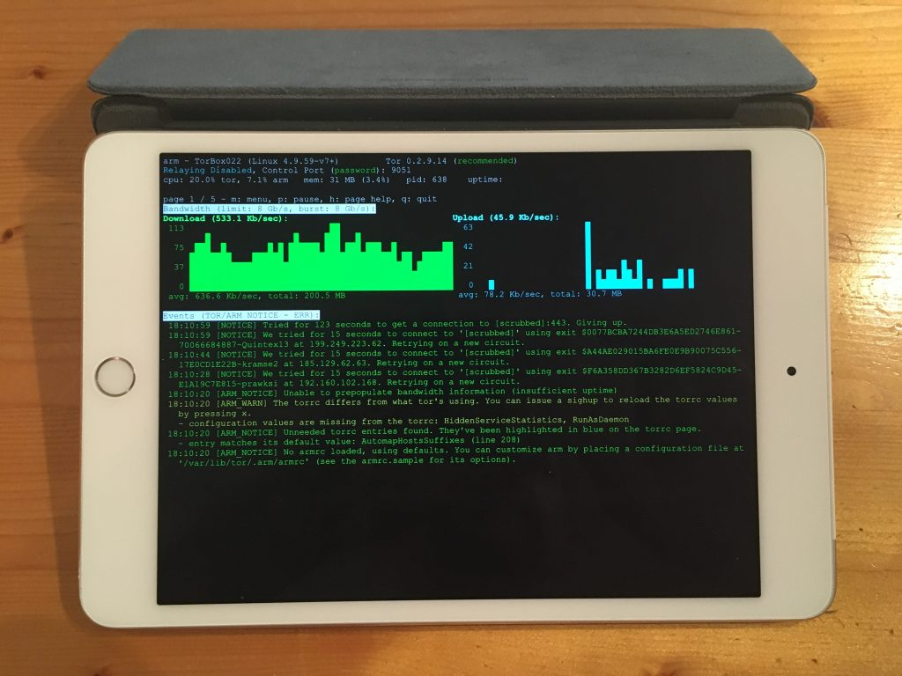
I just started TorBox up, but I cannot log into TorBox with a SSH client and/or webssh
When TorBox starts up, some scripts run tests, making sure that everything is set up according to the configuration and trying to prevent some known lock-out scenarios. Depending on the configuration, your last use, and the connectivity to the Internet, this can take some minutes, making it difficult to log into TorBox directly after starting up. Please wait some minutes and try it again.
Why is the display of webssh distortet?
Webssh uses HTML5 canvas. If the browser is blocking or replacing HTML5 canvas (for example Mullvad), webssh cannot display the content properly. You have to allow the browser to use HTML5 canvas, which can be done in Mullvad by clicking on the image on the left side of the address row.
Should I change the default passwords? How can I change my passwords?
Answer:
You should change the default passwords as soon as possible. It is an easy task: login into your TorBox with an SSH client, go to the configuration sub-menu, and choose the associated menu entries.
Even better is to generate an SSH key (see here) and, if it works without problem, turn off the SSH password login (see here).

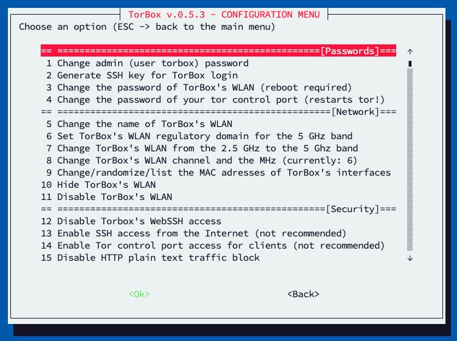
Should I change the name of the wireless network (SSID) of my TorBox? How can I change it?
Answer:
This is not mandatory, but you can do it without considerable effort: login into your TorBox with an SSH client, go to the configuration sub-menu and choose the associated menu entry.
Can I hide the name of the wireless network (SSID) of my TorBox?
Answer:
Yes, and it is easy to accomplish: login into your TorBox with an SSH client, go to the configuration sub-menu and choose the associated menu entry.
Is the use of a TorBox (or tor in general) considered secure?
Answer:
The answer to that question depends on the definition of “secure” and the necessary level of security/anonymity. This level is not for everyone everywhere the same and is highly dependent on the threat model for this person in a specific location for a specific time. Do you want to protect yourself from data theft in a public network (e.g., in a hotel), avoid government censorship, and keep your destination addresses secret? Do you want to remain anonymous to a site operator when accessing the site, possibly even to an international intelligence service? This sentence already contains four different main scenarios! Additionally, the consequences of revealing identity must be taken into account. This is why we warn on the main page that although security and overcoming censorship are relatively straightforward, staying anonymous is more complicated. Malware, Cookies, Java, Flash, Javascript, and more can compromise your anonymity. Even the people from the Tor Project themselves state that “Tor can’t solve all anonymity problems. It focuses only on protecting the transport of data.” Therefore, it is strongly advised not to use TorBox if your well-being depends on your anonymity. In such a situation, it is advisable to use Tails (read here, here and here why).
How severe is the risk of a traffic correlation analysis?
Read this blog post about the topic.
Can Tor protect me against tracking and/or fingerprinting in web browser to guaranty my anonymity accessing a website?
Answer:
The short and most secure answer is NO.
However, the reality is more complex and depends on your behavior. We tested different web browsers with different settings on a computer connected to the tor network with EFF‘s tool “Cover Your Tracks“. This tool checks how trackers see your browser. The test is not representative but indicates how important a web browser’s proper choice / configuration is. The ranking as of April 2023 is as follows:
- The Brave browser (in its default configuration) has strong protection against web tracking (tracking ads, invisible trackers and protection from fingerprinting).
- The Mullvad Browser (in its default configuration) has strong protection against web tracking and invisible trackers, but a nearly unique fingerprinting.
- The Tor Browser (in its default configuration) has strong protection against web tracking and invisible trackers, but a nearly unique fingerprinting.
- Firefox (in its default configuration) has strong protection against web tracking and invisible trackers but a unique fingerprinting.
- Chromium (in its default configuration) has strong protection against web tracking and invisible trackers but a unique fingerprinting.
- Safari (version 16, in its default configuration) has strong protection against web tracking, partially against invisible trackers but a nearly-unique fingerprinting.
- Google Chrome (in its default configuration) has no protection against tracking and fingerprinting. It is not recommended to use Google Chrome!
In combination with the TorBox, and based on PrivacyTests.org, we recommend using the Brave or Mullvad browser for the best security, privacy protection, and good usability.
Additional check-sites: BrowserLeaks and Are you unique ?
Do you know some useful browser add-ons to improve anonymity, security and/or usability?
Answer:
In my opinion following browser add-ons are useful. However, every additional browser add-ons can worse your protection against browser fingerprinting. All add-ons for Chrome are also available for Brave:
- NoScript: Allows JavaScript, Java, Flash, and other plugins to be executed only by trusted web sites of the users choice. NoScript also provides powerful anti-XSS and anti-Clickjacking protection. Tor Browser also uses this add-on. (USED BY THE TOR BROWSER AND MULLVAD; ESSENTIAL for SECURITY / ANONYMITY; available for Firefox and Chrome).
- First Party Isolation: First Party Isolation, also known as Cross-Origin Identifier Unlinkability, is a concept from the Tor Browser. The idea is to key every source of browser identification with the domain in the URL bar (the first party). This makes all access to identifiers distinct between usage in the website itself and through third-party. Think of it as blocking Third-party cookies, but more exhaustively. (USED BY THE TOR BROWSER AND MULLVAD; ESSENTIAL for SECURITY / ANONYMITY; available for Firefox).
- uBlock Origin: The only real working and independent ad blocker (USED BY MULLVAD; ESSENTIAL for SECURITY / ANONYMITY / USABILITY; available for Firefox, Chrome, Edge, and Opera).
- Smart Referer: Prevents Cross Domain Referer Leakage (ESSENTIAL for ANONYMITY; available for Firefox).
- CanvasBlocker: Allows users to prevent websites from using the Javascript canvas API for fingerprinting them. However, this could interfere with the correct running of web pages. (ESSENTIAL for ANONYMITY; available for Firefox)
- Decentraleyes: This browser add-on emulates Content Delivery Networks (CDN) by finding supported resources locally, and injecting them into the environment. All of this happens automatically, so no prior configuration is required. Here is a testing utility to find out if you are properly protected against a CDN vulnerability (ESSENTIAL for ANONYMITY; available for Firefox, Chrome, Edge, Opera).
- Neat URL: Cleans URLs, removing parameters such as Google Analytics’ utm parameters. (ESSENTIAL for ANONYMITY; available for Firefox, Chrome)
- Skip Redirect: Some web pages use intermediary pages before redirecting to a final page. This add-on tries to extract the final url from the intermediary url and goes there straight away if successful. (ESSENTIAL for PRIVACY / USABILITY; available for Firefox).
- uMatrix: Point and click matrix to filter net requests according to its source, destination, and type (available for Firefox, Chrome, and Opera).
- Privacy Badger: A balanced approach to internet privacy between consumers and content providers by blocking advertisements and tracking cookies that do not respect the Do Not Track setting in a user’s web browser (available for Firefox, Chrome, Edge and Opera).
- I’don’t care about cookies: The EU regulations require that any website using tracking cookies must get user’s permission before installing them. This add-on will remove these cookie warnings from almost all websites! (available for Firefox, Chrome, Edge and Opera).
Do you have another very useful browser add-on? Let me know in the comment section below!
Do you know some essential configuration adjustments for Firefox (via about:config) to improve anonymity and security?
Answer:
Yes, in my opinion following configuration adjustments for Firefox are very useful:
- To enable strict First Party Isolation, also known as Cross-Origin Identifier Unlinkability, search for privacy.firstparty.isolate and privacy.firstparty.isolate.restrict_opener_access and set both to true. Alternatively, the browser add-on First Party Isolation does the same (see above). You should really do that!
- To disable WebRTC (possible IP leak!!), search for media.peerconnection.enabled and double-click on it –> false.
- To disable that web software can access your device’s graphics processor, search for webgl.disabled and double-click on it –> true.
- To disable face detection using cameras, search for camera.control.face_detection.enabled and double-click on it –> false.
- To disable geolocation services, search for geo.enabled and double-click on it –> false.
- To prevent your browser from transmitting your computer’s battery status to websites, search for dom.battery.enabled and double-click on it –> false.
- To disable the ability to report what plugins are installed, search plugin.scan.plid.all and double-click on it –> false.
- To disable web speech recognition through the microphone, search media.webspeech.synth.enable and media.webspeech.recognition.enable and double-click on them –> false.
- To disable all telemetry features, search for telemetry and disable all true/false settings related to telemetry by setting them to false.
- To harden your browser (a little bit) against fingerprinting, search for privacy.resistFingerprinting and double-click on them –> true.
- To enable tracking protection, search for privacy.trackingprotection.enabled and double-click on them –> true.
- To disable WebAssembly (WASM), search for javascript.options.wasm and double-click on it –> false. (see also here).
- To disable remembering and saving the content of the forms you fill out, search for browser.formfill.enable and double-click on it –> false
- If you cut, copy or paste something from a website, then the website owners can get notified of exactly which part of a webpage you have cut, copied or pasted. If they wish, they can then record or modify the text, or prevent you from copying (etc.). To avoid that search for dom.event.clipboardevents.enabled and double-click on it –> false.
For more information see here, here and here. Do you have other essential configuration adjustments for Firefox or any other browser? Let me know in the comment section below!
Can I use TorBox and VPN together?
Answer:
The answer is basically “yes” — another question is if you should do that. However, there are two different ways to combine Tor and VPN: “VPN over Tor” and “Tor over VPN“.
VPN over Tor
“VPN over Tor” means that while using the TorBox, a VPN connection is established on your client device. In this case, the client device connects to a VPN server through Tor. This is possible if the VPN client application supports TCP. However, by default, many VPN client applications are set to UDP, which does not work. UDP data packages are not routed through Tor, and TorBox will block them.
The appeal of this method might be that the exit IP remains static and is not blocked as a Tor exit node by some websites. However, the major drawback is that this cancels out any security and anonymity advantages Tor has to offer. Technically, with this method, the VPN provider sees all your data traffic. You have to trust the VPN provider so much that you might not even use Tor at all. That is why we recommend to leave it alone.
Tor over VPN
Using main menu entry 10 represents a “Tor over VPN” situation. In other words, the TorBox is sending its encrypted data stream to a Tor entry Guard through a VPN tunnel.
There are two possibilities of how TorBox handles VPN connections:
- The VPN connection is already established, and the interface
tun0is configured. - The VPN connection is not established yet, but one or more
*.ovpn– files are in the~/openvpndirectory so that TorBox can execute OpenVPN with that file.
“Tor over VPN” can help in a situation, when Tor entry guards are blocked, and when even the use of Bridges does not help (the first choice to circumvent the blockage of Tor entry guards is to use TorBox’s bridge feature in the countermeasure sub-menu, not using a VPN connection). Without an obfuscating protocol, like OBFS4, the VPN provider sees that you are using Tor. Still, he does not see what you are doing and where you are going because the data stream is encrypted, and the final destination is hidden. However, it may be easier for an adversary to make a traffic correlation analysis on a VPN’s infrastructure. Matthew Traudt, a Computer Scientist at the U.S. Naval Research Laboratory, who has been doing research and development on Tor, wrote in a very comprehensive article about Tor and VPN that “[s]ince VPNs are so popular, isn’t it likely that the GPA has already done something to compromise the most popular ones?“.

Is it possible to activate an OBFS4 bridge relay and simultaneously use OBFS4 bridges on the same TorBox?
Answer:
No! That’s not possible. If both configuration settings are activated in the torrc, tor will not start anymore (unfortunately, without giving any messages). In these comments in a deleted branch, we discussed the question of running an OBFS4 relay and using OBFS4 bridges concurrently.
Is it possible to activate an OBFS4 bridge relay and simultaneously use the countermeasure against tightly configured firewalls?
Answer:
No! That’s not possible. If both configuration settings are activated, tor will not start anymore (unfortunately, without giving any messages). To start an OBFS4 bridge relay, you have to deactivate the countermeasure against tightly configured firewalls in the countermeasure sub-menu.
Is it possible to use bridges and simultaneously the countermeasure against tightly configured firewalls?
Answer:
We recommend using either bridges or the countermeasure against tightly configured firewalls. Only if something is blocking the use of bridges we additionally activate the countermeasure against tightly configured firewalls. However, if we don’t use bridges, we use the countermeasure against tightly configured firewalls by default.
With Snowflake and Meek, the countermeasure against tightly configured firewalls gets in the way, that’s why we automatically deactivate it.
My TorBox is connected to a captive portal (used in airports, hotels, coffee houses etc.) and cannot connect to bridges. What’s wrong?
Answer:
This problem is related to the question above if it is possible to use bridges and simultaneously the countermeasure against tightly configured firewalls. Sometimes captive portals are configured very restrictively, allowing using only ports 80 and 443. If TorBox cannot connect to the tor network, the best way to solve the problem is to activate the countermeasure against tightly configured firewalls, not to use bridges. If this is not possible because even with that countermeasure connecting the tor network is not possible, or you have to hide your tor traffic, you have to check that countermeasure against tightly configured firewalls is turned off. Subsequently, try to use bridges, and if that doesn’t work, try only bridges with ports 80 and 443 in their IP address.

Also, if you starting the first time your TorBox on this new location, check with entry 16 in the update and maintenance sub-menu if TorBox’s system time is synchronized with UTC. Tor needs a synchronized system time to be able to build circuits.
I set up an Onion Service and want to share a folder with or without client authorization, but TorBrowser on another system shows only errors that it cannot connect to the Onion Service. What is wrong here?
Answer:
Most likely, the TorBox is behind a tightly configured firewall. Turning on “Countermeasure against a tightly configured firewall” in the countermeasure sub-menu should solve the problem.
Why is tor so slow – is the tor network broken?
Answer:
From the Tor Project support site: “Using Tor Browser can sometimes be slower than other browsers. The Tor network has over a million daily users, and just over 6000 relays to route all of their traffic, and the load on each server can sometimes cause latency. And, by design, your traffic is bouncing through volunteers’ servers in various parts of the world, and some bottlenecks and network latency will always be present.” You may check the status page of the Tor Project to see if there are known problems in the network.
Also, in February 2023, the Tor Project wrote that for at least 7 months, several different types of ongoing denial of service (DoS) attacks have affected the Tor network. At some points, the attacks impacted the network severely enough that users could not load pages or access onion services. For more information, see here.
You could also try to activate the exclusion of slow tor relays with entry 16 in the configuration sub-menu.
Attention: The exclusion of slow tor relays comes with a higher risk of deanonymization due to fewer relays. Do not activate this feature if your anonymity has the highest priority.
Is there a way to force/block TorBox to use an exit node in a specific country?
Answer:
Using a (set of) specific Exit node(s) cannot only slow down your speed, but it can also compromise your security and anonymity (for example, this approach increases the correlation attack vulnerability) since all your traffic is always going through one or a restricted list of nodes. The Tor FAQ states the following: “You get the best security that Tor can provide when you leave the route selection to Tor; overriding the entry/exit nodes can mess up your anonymity in ways we don’t understand.”
In other words: we have not and will not give an easy possibility to alter the route selection (for example, exclude or restrict countries) in the TorBox menu. However, yes, there is a way to force/block Tor (and with it TorBox) to use an exit node in a specific country. Check “ExcludeNodes”, “ExcludeExitNodes”, “GeoIPExcludeUnknown”, “ExitNodes”, “MiddleNodes”, “EntryNodes”, and “StrictNodes” in the Tor Manual.
The question is, why someone wants to change Tor’s behaviour in such a way that it will compromise security and anonymity? If the answer to that question is that someone wants to use Tor for a streaming service like Netflix, then he will be better off with a VPN.
I’m connected to TorBox, and all is working as expected, but I’m not able to download something with my BitTorrent client. What’s wrong?
Answer:
BitTorrent is not working over Tor, because Tor doesn’t support UDP. There are clients with a “Tor-switch” and there are people using the SOCKS v5. However, this doesn’t change the fact that UDP is not routed through Tor. If in these configurations BitTorrent works properly, this means that the UDP packages go clear-net, revealing the identity of the client. With TorBox client-devices don’t have direct access to the clear-net. Consequently, UDP packages are dropped and the identity of the client is safeguarded. By the way: due to the high bandwidth usage caused by the BitTorrent protocol, it is considered impolite and inappropriate by Tor community members to use the Tor network for BitTorrent transfers. For that reason, some Tor exit nodes block BitTorrent traffic.
Isn’t there a workaround so that I can use TorBox and BitTorrent at the same time?
Answer:
Yes, there is, but it is a little bit complicated and slow. You need a external SOCKS v5 proxy server and a BitTorrent client, which works properly with it (for example: Deluge, qbittorrent and Vuze). BitTorrent is now tunneled through Tor to the proxy server. Regarding the Socks5 proxy server: we didn’t find any reliable working free public proxy server. The best server we found is coming with costs, even not so much: Private Internet Access (for alternative commercial proxy providers see here). Nevertheless, you should think very carefully about the necessity to use Tor for your BitTorrent traffic, because it is slow and due to the high bandwidth the Tor community doesn’t like it.

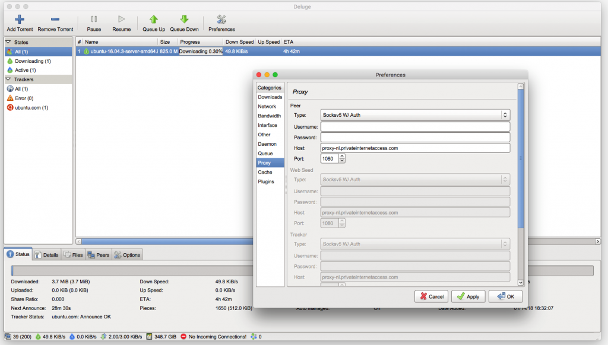
I would like to use wget or curl to download a file from a client via TorBox and the Tor network. What is the best way to do this?
Answer:
Unfortunately, it seems that there is no way to download a file using wget on a client device behind TorBox. However, you can use curl. Here an example:curl --socks5-hostname "192.168.42.1:9050" -O "http://x63xkeiw3cgczc6lcwf62aoe35rp6hfcz3mympmuha7xhj63qdf3ngid.onion/files/torbox-20231217-v053.gz"
Please adjust the IP address depending on your connection type to the TorBox:
– via WiFi: 192.168.42.1
– via ethernet cable: 192.168.43.1
– via OpenVPN tunnel: 192.168.44.1
I’m connected to TorBox but my browser doesn’t display .onion sites. What’s wrong?
Answer:
There are two reasons for this kind of problems:
- As per IETF RFC 7686, “Applications that do not implement the Tor protocol should generate an error upon the use of .onion and should not perform a DNS lookup.” To display a .onion site, you have to use the Tor Browser (for more details see “Using Tor Browser and TorBox together“), or the Onion Browser on iOS.
- In late 2021, tor relays started to block tor over tor traffic because it can harm the Tor network (see also further below).
There are several solutions to fix the problem:
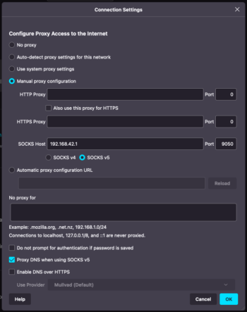
- Use Tor Browser with bridges. Since version 12 the Tor Browser has a reliable auto-connection feature, which automatically activates bridges when used from a client behind the TorBox. This solution works very well and is very secure. ???? ✔︎ On iOS Onion Browser works with obfs4 Bridges well, but currently you have to rely on the internal tor and select manually the use of obfs4 bridges because currently Orbot seems to fail to work with obfs4.
- Use Google Chrome (tested with version 120) and Chromium (version 120) because these browsers still resolve .onion addresses without any adjustments. This solution works very well but isn’t secure. ⚠️
- With the Mullvad Browser and Mozilla Firefox, you have to use the SOCKS v5 proxy functionality of your TorBox and configure Firefox accordingly (see image on the right): Under about:preferences, scroll down to the bottom and click under “Network Settings” on “Settings…”, choose “Manual proxy configuration”, and under “SOCKS Host” enter following IP: 192.168.42.1 / Port: 9050 (wlan) or IP: 192.168.43.1 / Port: 9050 (cable). Toggle on “Proxy DNS when using SOCKS v5”. The only negative point is that you must manually change the IP address if you switch from one connection type (WLAN/cable) to another. This solution works well, and, in the case of the Mullvad Browser, is very secure. ????
- With Brave, under Settings in the hamburger menu (≡), and then on “Privacy and security” in the sidebar, “Private window with Tor” has to be disabled. This change should enable the usage of .onion addresses in the usual browser tabs. However, depending on the Brave version, it sometimes works better, sometimes worse. Alternatively, you can also use .onion addresses with “Private window with Tor”, but you have to enable “Use a bridge” in the same setting page due to the tor over tor problematic (see further below). We recommend, in this case, first opening the “Private window with Tor” to be sure that Brave is connected to the Tor network (if needed, press the refresh sign on an empty private-window-with-tor tab) and then copy-paste the .onion address into the tab. For more information about Brave’s configuration, see here. ????
Important
Starting with TorBox v.0.3.2, it can be chosen, if the old SOCKS v5 port 9050 without stream isolation or the new port 9052 with destination address stream isolation should be used. With using port 9052, each destination address has its circuit. Currently, we consider the implementation as “experimental” because we are worried about a possible negative impact on performance when using stream isolation. We like to hear your feedback on your experiences about that feature so that we can decide if we go to enable it for the entire data streams, not only for that particular socket.
Onion Services v3 Client Authorization
Client authorization is a method to make an onion service private and authenticated. It requires Tor clients to provide an authentication credential to connect to the onion service. For v3 onion services, this method works with a pair of keys (a public and a private). The service side is configured with a public key, and the client can only access it with a private key. Currently, only the Tor Browser supports Client Authorization. However, since TorBox v.0.5.2, a server’s private key can be added on the TorBox under the Onion Service menu entry 13. With that entry, the TorBox will have access to the Onion Service and all client devices for which data traffic is routed through the TorBox.
When I start the Tor Bowser or when I open a window with Tor on Brave (both running on a client device of the TorBox), I cannot connect to the tor network. The same happens if I’m using Tails behind a TorBox.
Answer:
In late 2021, tor relays started to block tor over tor traffic because it can harm the Tor network. This situation is logged accordingly in the tor log file on the TorBox:
Not attempting connection to [scrubbed]:80 because the network would reject it. Are you trying to send Tor traffic over Tor? This traffic can be harmful to the Tor network. If you really need it, try using a bridge as a workaround.
In the case of the Tor Browser, since version 12 it has a reliable auto-connection feature, which automatically activates bridges when used from a client behind the TorBox – PROBLEM SOLVED!
Nevertheless, if you want to know more nerdy stuff about using Tor Browser and TorBox together or how to avoid a tor over tor scenario using Tor Browser, see here.
Regarding Brave: Under Settings in the hamburger menu (≡) go to “Privacy and security” in the sidebar; “Private window with Tor” has to be disabled. This change should enable the usage of .onion addresses in the usual browser tabs. However, depending on the Brave version, it sometimes works better, sometimes worse. Alternatively, you can also use .onion addresses with “Private window with Tor”, but you have to enable “Use a bridge” in the same setting page due to the tor over tor problematic. We recommend, in this case, first opening the “Private window with Tor” to be sure that Brave is connected to the Tor network (if needed, press the refresh sign on an empty private-window-with-tor tab) and then copy-paste the .onion address into the tab. For more information about Brave’s configuration, see here.
Ok, I’m using bridges so that the Tor Browser / Tails is running behind TorBox. However, isn’t that a risk for my security/anonymity (“tor over tor” scenario)?
Answer:
The short, easy and most safe answer is that if you want to stay on the safe side, avoid a tor over tor scenario. When a user connected to TorBox uses the Tor Browser with bridges without any other modification, the data stream goes through two circuits, which means you get six hops instead of three. The same applies when Tails is running on a client connected to the TorBox. In this situation, it is not guaranteed that the user will get three different hops – he could end up with the same hops, maybe in reverse or mixed order. The Tor Project’s take on that is the following:
Right now the path length is hard-coded at 3 plus the number of nodes in your path that are sensitive. That is, in normal cases it’s 3, but for example if you’re accessing an onion service or a “.exit” address it could be more.
“Can I change the number of hops Tor uses?”, The Tor Project, https://support.torproject.org/misc/misc-11/
We don’t want to encourage people to use paths longer than this as it increases load on the network without (as far as we can tell) providing any more security. Also, using paths longer than 3 could harm anonymity, first because it makes denial of security attacks easier, and second because it could act as an identifier if only a small number of users have the same path length as you.

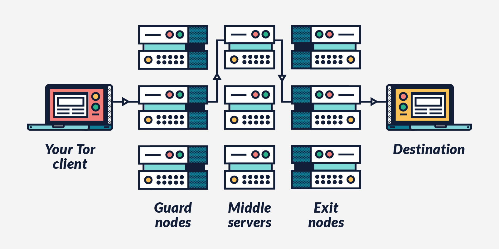
For starters, do you know some interesting .onion sites?
Answer:
For featured onionsites see here.
Here are some more: Ahmia Search Engine, Def Con Media Server, Duck Duck Go Search Engine, Imperial Library, OnionDir – Deep Web Link Directory, Onion Links, ProtonMail, The Hidden Wiki, The Pirate Bay, The Tor Project Homepage, Tor Status Page, TorLinks.
For more sites, see here, here or here (in German).
Tor statistics (main menu entry 1) don’t show up — the screen stays black. What can I do?
Answer:
The program “Nyx“, which shows the Tor statistics, uses the control port of the local Tor installation. If the loading of the Tor process gets stuck or takes much time (possible in case of network connection problems or censorship), “Nyx” need either much of time to start or doesn’t at all. However, we implemented an alternative way to quickly check the Tor’s log file: in the main menu, use “Show the Tor log file – quick and dirty”. The screen updates automatically when a new entry is written to the log file. Press q to leave it.
Tor did work without a problem. The Internet is reachable. Nevertheless, after a restart of TorBox, Tor doesn’t load anymore. It has been stuck at “Bootstrapped 0%” for more than 5 minutes! How can I fix that?
Answer:
First, check with ifconfig if TorBox did receive an IP address from your Internet device and if you can ping an Internet address like http://google.com. If that fails, then you have to (re)select the right Internet source in the main menu (entry 4-9) or/and shutdown and restart TorBox again.
Remark: Since TorBox v.0.3.2, the script responsible for reconfiguring the network settings checks some known problems and try to fix them, which reduced significantly the likelihood that TorBox is not getting any network connectivity. However, TorBox is configured as a DHCP client, which means that the router has to give TorBox all necessary network information (usually, the router is configured like that). If that doesn’t work, check out this FAQ entry.
If the Internet is reachable, but Tor is still stuck in the boot process, check with entry 16 in the update and maintenance sub-menu if the system clock is synchronized. Also, try to reset Tor and force a change of the permanent entry node with entry 10.
Other minor shortcomings could be the followings:
- Using two Internet sources simultaneously (for example, by forgetting to remove the ethernet cable).
- Using Internet<->wlan-TorBox-wlan<->client configuration without plugging in a USB WiFi adapter.
- Using the cellular option in the main menu without using a cellular device.
- Using a cellular device without an antenna.
When I boot up my TorBox, I can see the following error: “Failed to start Raise network interfaces” – what does it mean?
Answer:
Such messages, when starting or running TorBox, do not automatically mean that something is wrong.
We try to support as many devices as possible from the first boot on — especially USB adapters, which use the device usb0. But if there is no USB device available, this message appears at boot time. It has no effect on how TorBox functions and can be ignored.
How can I be sure that my devices are using the Tor network?

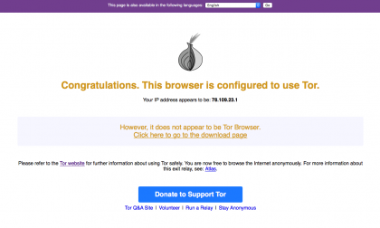
Answer:
Go to https://check.torproject.org/. Check with Panopticlick (by the EFF), if your browser is safe against tracking. To check for other browser leaks, go here (an excellent analytic tool!); additionally, you could also test against IP leaks, DNS leaks and DNS Nameserver spoofability. Another nice program is here. You can also monitor your data transfer by using TorBox’s main menu entry 1. On macOS, there is a nice program (IP in Menubar), which permanently displays the IP address of your Tor exit node in the menu bar.
Why do I receive a grey onion on the Tor Project’s check-site?
Answer:
Because the user agent string of your web browser differs from the one from the Tor Browser. The Tor Browser is using following user agent string: “Mozilla/5.0 (Windows NT 6.1; rv:52.0) Gecko/20100101 Firefox/52.0”. You can easily switch your current user agent string with “User Agent Switcher” (for Firefox). However, there are side effects:
- Changing the user agent without changing to a similar platform makes your browser nearly unique and allow for fingerprinting your device.
- If your string is saying that you are running Windows NT 6.1, most likely a download page automatically offers you a download package for Windows NT, even if you are running OS X. Therefore, a user agent switcher allows you to change the string in one or two clicks if needed.
I’m connected to TorBox with an ethernet cable, and all is working as expected. However, when I change my Internet to “Wireless network”, I’m not able to connect to the Internet anymore.
Answer:
It may sound silly, but for an Internet<->wlan-TorBox-wlan<->client configuration, you have to plug in a USB WiFi adapter. For such a configuration, an adapter is needed because neither the Raspberry Pi onboard WiFi chip nor the USB adapter can access to the Internet and the client at the same time
My TorBox is connected with the Internet via ethernet. I’m using onboard WiFi for my client devices. How can I additionally connect a cable client?
If the Internet connection already occupies the onboard ethernet interface, then a lan to usb adapter is necessary.
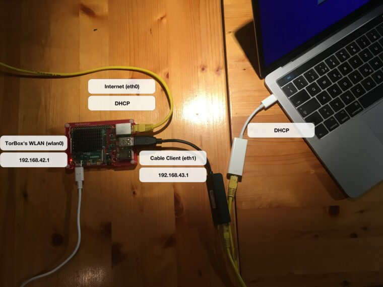
My client, which is connected to the TorBox, doesn’t receive an IP address.
Answer:
Usually, the DHCP server on TorBox provides your client with all the necessary information. If it doesn’t work, and you are sure that your client is configured accordingly, first try to restart TorBox. Doesn’t that work either, then try to configure your client manually:
# Connected with TorBox's WiFi
IPv4-address of your device: 192.168.42.x (x > 12)
Net Masq: 255.255.255.0
Router / Gateway: 192.168.42.1
DNS: 192.168.42.1 / torbox.ch
# Connected with a cable
IPv4-address of your device: 192.168.43.x (x > 12)
Net Masq: 255.255.255.0
Router / Gateway: 192.168.43.1
DNS: 192.168.43.1 / torbox.ch
My TorBox doesn’t receive an IP address from the network router.
Answer:
TorBox is configured as a DHCP client, which means that the router has to give TorBox all necessary network information (usually, the router is configured like that). If that doesn’t work, try to configure TorBox manually according to the data of your provider or an actual client, which works with your router properly:
sudo ifconfig <interface> <static_IP_address>
sudo route add default gw <gateway_ip>
My TorBox receives an IP address (192.168.42.* or 192.168.43.*) from the network router, but it doesn’t work.
Answer:
TorBox, in its default configuration, occupies the IP-addresses 192.168.42.0 – 192.168.42.255 for its wireless network and 192.168.43.0 – 192.168.43.255 for cable connected clients. In the very rare case in which the network router uses the same IP range, you have either to change the IP range of the router or to change the configuration of the TorBox. For more information, please contact me.

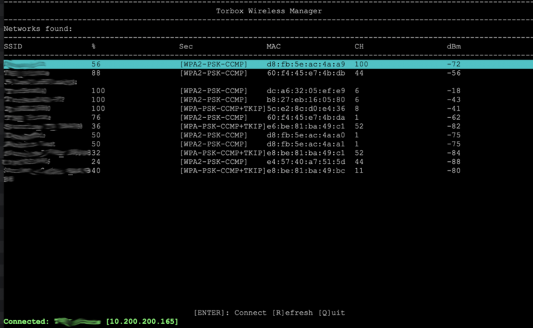
I’m connected to a public wireless network; everything works as expected. However, every x minutes, the connection to the wireless network stops completely, and I have to repeat the entire login procedure. What could be the reason?
Answer:
Certain Internet provider (usually at airports, in hotels, coffee houses, etc.) disconnect the network connection after a particular time of inactivity. In this case, the Tor statistics (main menu entry 1) no longer shows any data transfer and after about 15 seconds, errors in communication with the Tor network will appear. Try to activate in the countermeasure sub-menu the “Countermeasure against a disconnection when idle feature”.
TorBox’s wireless manager doesn’t show (all) wireless networks (2,5 GHz and/or 5 GHz)! What can I do?

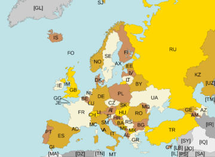
Answer:
There are several reasons that none or only some 2,5 and/or 5 GHz wireless networks are shown in the TorBox Wireless Manager:
- No driver or no 5 GHz support: Most wifi USB adapter doesn’t support the 5 GHz band. We tested three such adapters here. However, that’s not enough. These adapters (and also some 2,5 GHz adapters) need specific drivers, which are usually not included with the Raspberry Pi OS, Debian, or Ubuntu (but they are installed in the TorBox image). You have to install/update these additional drivers during the dialogue with the first-use script when you start the first time the TorBox or you have to use entry 2 in the Update and Maintenance sub-menu. If you have only a supported 2,5 GHz adapter, which doesn’t support 5 GHz, but a Raspberry Pi 3 Model B+ or a Raspberry Pi 4 Model B, then you can use Raspberry Pi’s wifi chip to connect the 5 GHz network and the 2,5 GHz adapter as Access Point by using in the main menu entry 7. Because of security reasons, this configuration will be reset with every reboot and has to be selected again, if the failsafe is not disabled in the Danger Zone entry 4.
To see what your wifi chip and USB adapter are capable of, use first the commandiw devto identify whichphyhardware device is linked to whichwlandevice. Usually,phy0is linked withwlan0(wifi chip) andphy1is linked withwlan1(USB adapter). Then withiw listyou get a list of all capabilities of all wifi devices. Channels with the remarkno IRorRadar Detectioncannot be used.

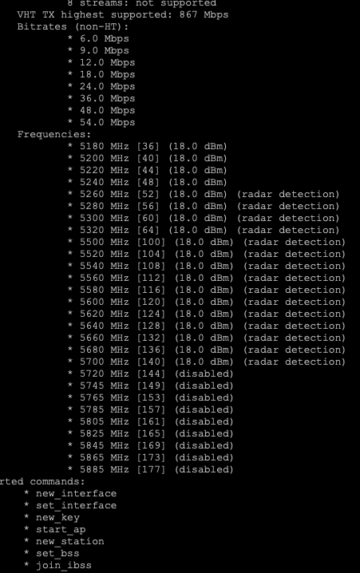
- Location-specific restrictions on the capability of an USB adapter: The available channels of a wifi device depend on the device and where it was programmed as well as on the WLAN regulatory domain (
iw reg get) set on the TorBox. Unfortunately, the programming of a wifi device cannot be changed, only further restricted. As an example, if your device was programmed for operation in the US, which allows operation on channels 1-11 on the 2.4 GHz, band and you visit Japan, which allows operation on channels 1-14, and you change your regulatory domain to JP you will not be able to use channels 12-14. But if you have a device programmed for operation in Japan and visit the US and select US as your regulatory domain, you will have channels 12-14 disabled. This is also the case for the 5 GHz band. You can change the WLAN regulatory domain with entry 5 in the Configuration sub-menu. If your USB adapter is too restricted to catch all wireless networks, try to to switch the role of the Raspberry Pi’s wifi chip and the USB adapter by using the main menu entry 7.
To check which wireless networks each adapter is able to see, you can usesudo iw list <DEVICE> | grep ESSID(<DEVICE>iswlan0orwlan1).

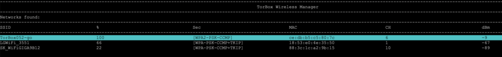

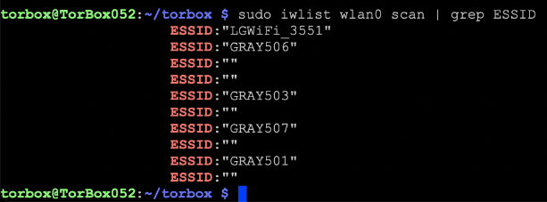
My wireless network has non-latin characters. How can I connect to such a wireless network using TorBox’s wireless manager?
Answer:
Because the TorBox wireless manager is a text-based program, by default, it cannot display non-latin characters. However, it displays such a wireless network with escape sequences, which looks a little bit odd. Nevertheless, if you select such a wireless network, it will correctly connect.


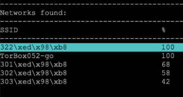
The TorBox Wireless Manager seems to crash instead of showing me wireless networks! What’s wrong here?
Answer:
If errors or code lines are displayed instead of the TorBox Wireless Manager, then the driver for the wireless adapter is missing or wrong. Please install/update the additional drivers using entry 2 in the Update and Maintenance sub-menu.
I’m using a Raspberry Pi 3, but I cannot reach the AP after some time anymore. What can I do?
Answer:
That’s a problem with the internal wifi chip of the Raspberry Pi 3 (and the Raspberry Pi Zero W, too). A possible fix is to turn off the energy-saving mode with the following command: iw wlan0 set power_save off or/and iw wlan1 set powersave off.
All about WiFi network connectivity problems: USB 3.0 interference with WLAN
The Raspberry Pi 4 and 5 have two USB3 ports, which are coloured blue. Unfortunately, the simultaneous use of USB3 and 2.5 GHz USB wireless devices may cause frequency interference (see the image below). In SuperSpeed mode, USB 3.0 transfers data at 5 gigatransfers per second. The base frequency of these 5 gigatransfers is 2.5 GHz, which is very close to the WLAN band (2.400-2.483 GHz) and ensures that cables, sockets and devices emit high-frequency signals. The Interference could be especially problematic if your client is connected through Raspberry Pi’s onboard chip and if the Raspberry Pi is connected with another WLAN through a USB3-WiFi Adapter using 2,4 GHz. This can lead to disruption between the client and TorBox (for example, if the download of a big file is constantly interrupted) or disconnection between the TorBox and the Internet.

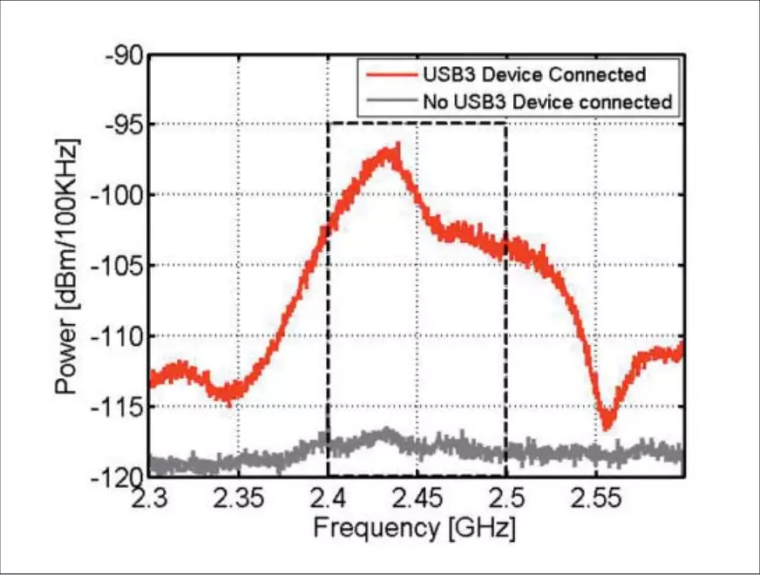
Possible solutions
Regarding the onboard chip, the easiest solution is to switch from 2.5 GHz to 5 GHz by using entry 7 in the Configuration sub-menu.
However, that can lead to some other problems. For example, if an older device cannot use 5 GHz, it cannot connect to the TorBox via the onboard chip. Also, using the 5 GHz configuration for the onboard chip and a WiFi USB device simultaneously could lead to severe interference, hindering you from connecting to the TorBox AP or the Internet.
All about the power supply: “Under-voltage detected!” / Red flashing LEDs / Unusual, strange behaviours.

Your TorBox must receive enough power. The red (or green) PWR LED on your Raspberry Pi must be permanently lit. If it does not light up or flash, the voltage has most likely fallen below 4.63V. Additionally, with the Raspberry Pi 3 Model B+, the drop below 4.63V is notified by an “Under-voltage detected!” in the terminal. It does not automatically mean that TorBox will not work, but it can lead to strange behaviours, network disconnections, data losses, or even corruption of your SD card. If this message regularly arises or/and the red PWR LED flashes for a longer time, then you should switch to a more reliable power supply, such as the official and recommended power supply for the Raspberry Pi (for version 3 Model B/B+ and version 4 Model B – do not use the USB Micro-B to USB-C Adapter!!). If you like to use another power supply or a power bank (for a “TorBox to go” situation), the following minimum requirements are recommended to ensure a trouble-free operation of your TorBox:
- Raspberry Pi 3 Model B: 5V / 2.4A / 12W
- Raspberry Pi 3 Model B+: 5V / 3A / 15W
- Raspberry Pi 4 Model B: 5V / 3A / 15W — see also “The Raspberry Pi 4 and the trouble with its USB-C connector.”
- Raspberry Pi 5: 5V / 3A / 15W or with the Raspberry Pi 27W USB-C Power Supply also 5V / 5A / 25W
If the “Under-voltage detected!” notification spams your console or your log file, a temporary fix is to ignore it: create /etc/rsyslog.d/ignore-underpowering.conf with :msg, contains, "voltage" ~ and you can enjoy your unstable system.

The necessary power supply is highly dependent on your peripherals. Even with a reliable power supply, you could run into problems, especially in a “wireless-internet to wireless-clients” connection setting. As a rule, simpler, low-powered USB WiFi Adapters lead to fewer problems (see image right). Especially booting up your Raspberry Pi with an already attached USB WiFi adapter could be too much for your board’s power supply. In such a case, try to boot up the Raspberry Pi first and attach the USB WiFi adapter later when the system is already running. Another solution could be to use a Raspberry Pi 3 Model B instead of a newer, more power-hungry variant. Even if it has a lower network performance, it may run more stable, especially on a power bank, due to its lower power consumption (see this Raspberry Pi 3 B+ Review and Performance Comparison and this Power Consumption Benchmarks). Also, in case of problems, avoid using the 5 GHz band for TorBox’s own wireless network because it requires more power and usually does not give you a higher network speed.

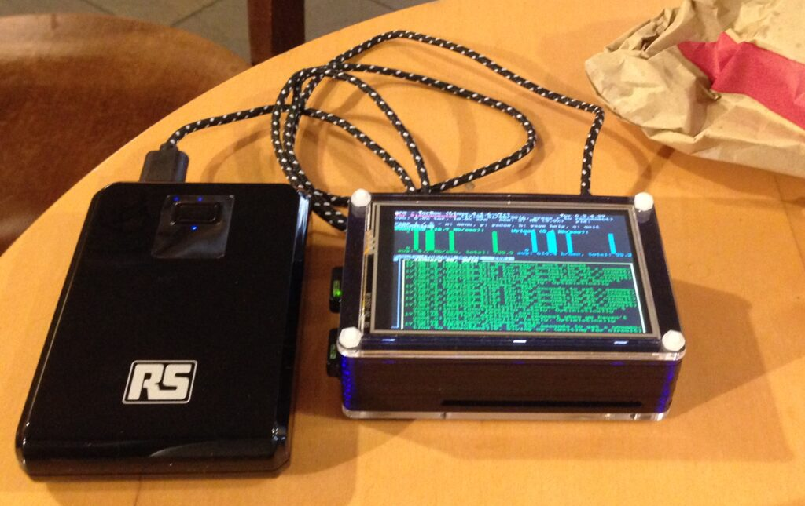
Important for Raspberry Pi 4: the firmware updates in late autumn 2019 reduce overall power consumption. Since then, 5 GHz USB WiFi adapters have also worked, even in a “wireless-internet to wireless-clients” configuration. See our results when we tested three 5 GHz USB WiFi adapters.
I can’t get tethering to work. What’s wrong with it?
Answer:
Your TorBox must receive enough power. Therefore the tethering option is the last choice because attached smartphones charge their battery as soon as they are connected to the USB port. This could lead to an underpowered Raspberry Pi, which could result in various unforeseen behaviors (see the two questions/answers above). For that reason, it is recommended to charge your smartphone on another power source, to set up a personal hotspot, and to use one of the two “Wireless network” entries in the main menu.
Whoever wants to give a try: using tethering is simple. For example, in case of an iPhone: unlock your iPhone, but let the personal hotspot disabled for the time being and connect your iPhone with your Raspberry Pi’s USB port. Choose to trust your iPhone (necessary!). Enable personal hotspot on your iPhone (USB only). Finally, choose “Tethering or USB ethernet adapter (eth1)” in the TorBox main menu.
If I have two or more clients, let’s say device 1 and device 2, connected to the TorBox will it intelligently make sure each client has its own tor circuit?
Answer:
Yes, each client has its own circuit. However, all applications on the same client use the same circuit. For example: if you open Brave and Mullvad and check your connection, both browsers on the same machine have the same external IP. In contrast, in the Tor Browser, every new domain gets its own circuit — this is an advantage of the Tor Browser. TorBox changes the circuit (middle and exit node) all 10 minutes (that’s the default for Tor).
Starting with TorBox v.0.3.2, SOCKS v5 port 9052 supports destination address stream isolation. With using port 9052, each destination address has its own circuit. Currently, we consider the implementation as “experimental” because we are worried about a possible negative impact on performance when using stream isolation. We like to hear your feedback on your experiences about that feature so that we can decide if we go to enable it for the entire data streams, not only for that particular socket. See this FAQ entry to learn more about using TorBox’s SOCKS v5 proxy functionality.
Sometimes, a website will not be loaded in a browser. Instead, the error message DNS_PROBE_POSSIBLE or something similar is shown. What can I do?
Answer:
We have been investigating this problem for quite some time. DNS_PROBE_POSSIBLE means that the resolver could not find DNS records for the requested hostname. Our thesis is that some tor relays may block DNS requests. All DNS resolutions from client machines are done through the tor network. If this doesn’t work correctly, no IP address will be reported to the browser. You can quickly fix that error by choosing TorBox’s main menu entry 3 to restart tor.
I heard that transparent Tor proxies are dangerous! I shouldn’t use TorBox, right?
Answer:
They are dangerous to what? The necessary level of security/anonymity is not for all users the same and highly dependent on your threat model. Do you want to protect yourself from data theft in a public network (e.g., in a hotel), do you want to avoid government censorship and keep your destination addresses secret, or do you wish to remain anonymous to a site operator when accessing the site, possibly even to an international intelligence service? This sentence already contains four different main scenarios! Additionally, the consequences of revealing identity must be taken into account. This is why we warn on the main page that although security and overcoming censorship are relatively easy, staying anonymous is more difficult. Malware, Cookies, Java, Flash, Javascript, and more can compromise your anonymity. Even the people from the Tor Project themselves state that “Tor can’t solve all anonymity problems. It focuses only on protecting the transport of data.” Therefore, it is strongly advised not to use TorBox if your well-being depends on your anonymity. It is advisable to use Tails (read here, here and here why) in such a situation.
What are the main differences between TorBox and Whonix?
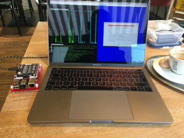
Answer:
Interestingly, this question comes up quite often. Probably because Whonix was named TorBOX at the beginning. We didn’t know that at the beginning of our project in 2011/12 (there is also a hidden mailbox service, which is only accessible from Tor, called TorBox). To be clear, TorBox has nothing to do with Whonix. According to our understanding, with Whonix, the Tor gateway and the workstation run on the same physical machine, but the two are virtually separated. With TorBox, this separation is physical: there is the Raspberry Pi (TorBox) as gateway / router / firewall, and separated from that your workstation, e.g., your Laptop. Just like a virtual machine in Whonix, the workstation does not have a public IP address when using TorBox. With TorBox, all client devices are served with an IP address from a private IPv4 address space (192.168.42.x and 192.168.43.x). IPv6 support is not yet implemented, but we think about using unique local addresses for the implementation to have the same separation between the gateway (TorBox) and the workstation. In other words: if the workstation is compromised, your real IP address will not be leaked — but this does not necessarily mean that anonymity is granted. A dedicated attacker would probably hide his attack and collect as much information as possible about your workstation, the content on that workstation, and its owner. Again, if your well-being depends on your anonymity, Tails is probably the better choice for you.
Why is the local TorBox traffic not routed through tor? Why is by default Google’s and/or Cloudflare’s service used to circumvent cheap censorship measures or to test the connectivity? Can I change Google and/or Cloudflare services with something else?
Answer:
Tor and TorBox need a working direct DNS resolution with Bridges, captive portals, VPN connections, time synchronisation, and other maintenance tasks. These functions must work regardless of whether or not tor has a connection with the tor network. That said, it is essential to distinguish between the data traffic from the connected clients, TorBox’s tor-related local traffic using the TorBox menu and the local TorBox traffic using the terminal by leaving the TorBox menu.
- The data traffic from the connected clients, which has to be protected, is completely routed through tor (including DNS requests). TorBox is configured so that any direct DNS requests from clients are blocked.
- TorBox’s tor-related local traffic using the TorBox menu is routed through tor, if possible. If a tor-related connection through tor is impossible, the user is asked or informed that TorBox will use a direct connection because we will not that people in countries which forbid the use of tor get unknowing into trouble. However, if the connection has nothing to do with tor, for example, synchronizing TorBox’s system time, no information is necessary. If required, local DNS resolution will be made through public name servers to avoid cheap censorship mechanisms (for more information, see here).
- TorBox’s local traffic using the terminal will resolve DNS directly. Local network data from the command prompt is NOT routed through the tor network! However, specific tools like
torsocksare available to torrify your work at the command prompt.
We decided to use Google and Cloudflare services to overcome cheap censorship mechanisms or to test the connectivity by default because of the availability, accessibility and amount of data traffic to these two sites. The used (DNS) servers must be reliable worldwide and possibly have a high data volume, so TorBox’s local requests don’t stand out. We think queries to a rather not-so-known xyz DNS would be more noticeable. Also, the probability that these servers would be blocked in an authoritarian country would be higher. However, after a restart, local DNS resolution must be made according to the Internet provider’s settings. It is necessary to deal with captive portals using the TUNNELLING method.
Is it possible to change? Since TorBox v.0.4.2, used nameservers and the URL to check the connectivity in run/torbox.run can be changed with the options NAMESERVERS (see here for alternatives) and PING_SERVER. At the top of the installation scripts, run_install.sh, run_install_on_debian.sh and run_install_on_ubuntu.sh the entries NAMESERVERS and CHECK-URLx can be changed.
Why isn’t TorBox compatible with the Raspberry Pi 3 Model B or older hardware… and why don’t you offer a 32-bit version of TorBox?
Technically, TorBox should run on a Raspberry Pi 3 Model B, but the workload could overwhelm the older Pi in certain situations, causing latency or even freezing. For example, some users reported that they occasionally lost Internet connectivity or that the TorBox froze. Regarding freezing, we observed it after a longer runtime. We also observed that additional network drivers can cause a lockout: SSH login becomes impossible when a USB adapter that relies on those drivers is used. In short, on a Raspberry Pi 3 Model B, TorBox may run stably for a day, but is not recommended for use for days or weeks. Also, the Raspberry Pi 3 Model B is only an option with a WiFi USB adapter, which works “out-of-the-box” and doesn’t need additional drivers. These observations and recommendations are valid for the TorBox image based on Raspberry Pi OS Lite 64-bit systems. TorBox, based on an older Raspberry Pi OS Lite 32-bit, may run without any issue – we don’t know that for sure. You can try it using the installation scripts on old/new Raspberry Pi OS, Debian, or Ubuntu installations.
We don’t provide image files other than the latest Raspberry Pi OS Lite 64-bit version. The reason is that this is the most likely requested version. However, the most critical point is that we don’t have the time and capacity to build and test different image files. However, you can easily install TorBox using our installation scripts on a newly created SD card with Raspberry Pi OS “Bookworm” Lite 32-bit.
Could you incorporate pi-hole to remove ads?
Answer:
Pi-hole is a fantastic project to block advertisements and probably also some malware. However, the filtering is carried out exclusively based on blocking lists. The pi-hole software does not contain any functions that check the content of the requested data. Furthermore, filtering is only carried out based on domain names. Advertising or tracking code, which is already retrieved on the client-side by accessing specific IPs and therefore does not require a DNS query, cannot be influenced by the pi-hole software. However, this type of blocking can be achieved just as well for websites by plugins such as uBlock Origin or Privacy Badger.
Integrating pi-hole into a TorBox may prove difficult because pi-hole and TorBox are probably unscrewing on the same network tools and configurations. Furthermore, such combinations can lead to security risks – the more complex and multi-modular a system is, the higher the risk.
Finally, according to “The Design and Implementation of the Tor Browser“, site-specific or filter-based addons such as AdBlock Plus, Request Policy, Ghostery, Priv3, and Sharemenot have to be avoided. These addons do not add any real privacy to a proper implementation of Tor Browsers’ privacy requirements. On the contrary, the unique filter sets that each user creates or installs provides a wealth of fingerprinting targets. Development efforts should be focused on general solutions that prevent tracking by all third parties rather than a list of specific URLs or hosts. Even TorBox is not Tor Browser, and the addons mentioned above are not pi-hole, we think the situation is comparable.
I have problems with the wifi network from/to TorBox/Internet router/clients connected to the TorBox. Please fix it for me!
Answer:
How should I be able to fix such a complex problem with no access to the hardware and (often with such requests) without any details about the problem? There are so many different possibilities: hardware problems, software bugs, bad supported dongles, configuration errors, and so much more. Important information to pinpoint the problem is the version of the TorBox, to know what exactly fails to work (is it the internal chip or an USB dongle), the name of additional used hardware (for example, the type of the USB dongle) etc.
Some of these problems will show up in the system log file in more detail. This is why I recommend as a first measure to turn the logging from low to high (configuration sub-menu, entry 17) and to search for any suspicious entries.
Possible other measures to try:
- – If you used the image file, you could try the install script instead (vice versa).
- – Update the basic system (update and maintenance sub-menu, entry 1).
- – Update the firmware – that may help with problems with the internal chip (update and maintenance sub-menu, entry 2).
- – Update the network drivers – that may help with problems with a USB adapter (update and maintenance sub-menu, entry 3).
- – Try the Debian version of our installer on a Debian for Raspberry Pi system
- – Change the hardware
Of course, these measures are only helpful if the TorBox is the cause of the disconnections, not when the (Internet) Router is shutting down the connection. You may look at how your Router manages and renews the IPs for the connected devices (DHCP lease time).
I can’t get TorBox to work and need more detailed help! What should I do?
Answer:
In this case, send us an email with the following information:
- Which version of the Raspberry Pi and TorBox do you use?
- Could you connect the TorBox WiFi (for example, “TorBox052”)? If no: Which clients did you try?
- Could you access the TorBox with an SSH client, and did you see the main menu? If not: Which SSH clients did you try?
- How did you connect your TorBox with the Internet? Did you already try with a wireless USB adapter?
- What kind of power supply do you use?
- In which country did you try to connect TorBox to the Internet.
- Did you try to synchronize your system time with entry 15 in the update and maintenance sub-menu?
- Did you try or use the countermeasure against tightly configured firewalls? Did you also try to use TorBox without it?
- Did you try or use OBFS4 / Meek / Snowflake bridges?
- Did you try to use TorBox with a randomized hostname?
- What else did you already try (which menu entries), and which error messages did you see?
Additionally, and if possible, we need the following files below (added to the email). You can get the files by downloading them from your TorBox by using an FTP client, which supports SFTP (it uses the same login and password as your SSH client). Alternatively, you can retrieve these files by connecting a USB stick with your TorBox. You can mount the USB stick most probably by “sudo mount /dev/sda /mnt”, and then copy all the below-mentioned files on it:
- /etc/tor/torrc
- /etc/iptables.ip4.nat
- /etc/network/interfaces
- /etc/hostapd/hostapd.conf (don’t forget to delete your password)
- /var/log/tor/notice.log
- the output (copy-paste) of “ifconfig”
Hi,
where do you stand on javascript and web assembly? I’m told to disable those also. WebAssembly is a new programming language by Google and poeple say the it might have exploits. I disable it.
The more you turn off, the smaller is the risk of safety holes. However, the question of the necessary security level is a personal matter and depends on the individual threat model. The necessary security/anonymity level is not for all users the same and highly depends on your threat model. Do you want to protect yourself from data theft in a public network (e.g., in a hotel), do you want to avoid government censorship and keep your destination addresses secret, or do you want to remain anonymous to a site operator when accessing the site, possibly even to an international intelligence service? See also here.
A more detailed answer to this question wouldn’t be directly related to TorBox and would go beyond this comment’s scope.
Thanks John,
Yes you are right John about the different security measures., I just double-checked what Tor does for its high security settings and yes it does disable WebAssembly, so I’m thinking that the right thing to do is to put it up on this site to give people the optoin. Why I do this is the browser doesn’t tell you if a site uses it. You are left guessing. I don’t like that.
So the way to do it is in the about:config address you search the keyword wasm. Then you disable it. If you are the web designer type it up better than me but you get the gist, yes?
?
Thanks for your hint. I have done my researches and have included your recommendation to the section “Do you know some essential configuration adjustments for Firefox (via about:config) to improve anonymity and security?” on the FAQ page above.
Hi, First of all, thank you for the nice work. In one of your Q/A, you mention:
I’m connected to TorBox with an ethernet cable, and all is working as expected. However, when I change my Internet to “Wireless network”, I’m not able to connect to the Internet anymore.
Answer:
It may sound silly, but for an Internetwlan-TorBox-wlanClient configuration, you have to plug in a USB WiFi adapter. For such a configuration, an adapter is needed because neither the Raspberry Pi onboard WiFi chip nor the USB adapter can access to the Internet and the client at the same time
However, I like to have “Internetwlan-TorBox-ethClient” configuration without needıng a second usb-wlan adaptor. This configuration provides an air-gap, the client does not have to have wifi enabled which may yield location information if the client is hacked.
If you can provide “Internetwlan-TorBox-ethClient” configuration option it would be a nice addition.
Best
Hello Bill
To get a Internetwlan-TorBoxETHClient, you can try the following:
How to configure torbox and clients, to work around only with wireless network, (no ethernet cables!)
How many wireless card is it required and which model? (For raspberry pi 4 B)
To 1: TorBox does it automatically for you, there is no need for an additional configuration. By using the main menu entries 4-9, TorBox checks, if you have an LAN client. If this is not the case, it configures itself for WLAN client only use. This will only change by using the main menu entries 4-9 again and simultaneously available LAN client.
To 2: If you want to have a WLAN-to-WLAN connection then you need at lis one USB WiFi dongle, which is supported by Raspbian. Regarding the model, currently it is important that it doesn’t consume a lot of energy (see here). However, we hope that this factor will play a minor role with the replacement of the WICD network manager by our own TorBox Wireless Manager. My personal recommendation is the TP-Link Archer T4U AC1300 (for more information see here).
Thank you for your great work!
Two questions and a suggestion:
Recently raspberry pi os secretly added a micro$oft repo in very shady ways to existing distros – without giving notice (plus censoring and locking threads on their forum about giving micro$oft root access to pi users). This article gives the details and the solutions to that:
https://www.cyberciti.biz/linux-news/heads-up-microsoft-repo-secretly-installed-on-all-raspberry-pis-linux-os/
The trust towards raspberry pi os is definitely broken (probably why they changed their initial name ‘raspbian’ too).
Is it possible to use an official raspberry debian 10 image:
https://raspi.debian.net/tested-images/
– and proceed with the script?
If no packages from the Raspberry-pi-os-repo are used it should make no difference whatsoever, but I assume that’s not the case. Still it would even then make sense to simply add the Raspberry-pi-os-repo to the debian-raspi, to limit further abuse without loss of functionality.
Does the torbox always run in tor-client-mode? I’m asking because of the severe risks of running an exitnode, and I very much assume it is not the case, but still want to ask.
Looking at the script I’ve seen that for example -google.com- is used to test connectivity and also their dns-server, which is yet another very aggressive data miner. I think this should and can easily be avoided. And using a free non-logging dns-server that also blocks ads and malware -like adguard-dns for example-, kind of helps users that requested the pi-hole feature.
Anyway, much thanks again for all you provide!
Greetings
Anon
Thanks for your comments and sorry for the late answer.
Regarding the installation of TorBox on a Debian 10 system: yes, I just finished and tested an installation script for that. For more information see here.
Yes, TorBox, by default, is only running as a client. With the sub-menu “Defend the Open Internet“, user can configure an OBFS4 bridge relay. However, there is no way to configure a middle or exit node. Of course, theoretically, a user could set up a middle or exit node by changing the torrc configuration file manually. Still, I guess a Raspberry Pi would probably be completely overwhelmed with it. If you want to be sure, take a look into torrc.
Your remark that TorBox is using for the DNS resolution for local install, maintenance and update traffic Google’s (and Cloudflare’s) DNS servers is correct. Important is that all DNS requests from the clients are going through Tor.. You will find in the FAQ why we decided to do it like that. Additionally, you will find there also an explanation, how you can change that. Because that point was raised by several people lately, we think about adding an entry in the configuration sub-menu to give the user the possibility to change the used DNS servers easily (not implemented, yet).
Pihole works with TorBox…this makes web browsing much faster since ads and trackers are blocked.
Is it possible to make torbox work with a 32bit architecture raspberry?
Officially, we support TorBox only on a Raspberry Pi 3 (Model B / Model B+) and on a Raspberry Pi 4 Model B. Because the image is based on a 64bit Raspberry Pi OS, you cannot use it for a 32bit architecture. However, someone reported a few days back that he managed to install TorBox using the installation script on Raspberry Pi 2 Model B with a 32bit Raspberry Pi OS. His success shouldn’t surprise since TorBox doesn’t need something 64bit specific.
I’ve managed to install it on a raspberry pi b (the first one) with the installation script. I’ve also installed drivers with dkms and now I’m using it as an access point with 2 wifi card connected to it. It works just fine, the only downside is that it take a loooong time to build everything (8+ hours)
Could you please elaborate HOW you did it. I am completely stuck with my Pi 1 B+. The reason I ask for help is to save ressources. A Pi 1 B+ is really powerful enough, there is no need to burn x watts with a Pi 3 or 4. As a hint: With the last image of torbox 5.0 the installation on a Pi 1 B+ works like a charm. Nevertheless I’d rather have the latest Version of Torbox. Too much to ask?
Regards
Did you try the installation script on a Raspberry Pi OS lite 32 bit? If that produces errors, please use our GitHub Repository to open an issue.
Tried the installation script as well as “doing it per hand” as described in http://www.torbox.ch/?page_id=205.
Making a wheel for opencv-python-headless causes trouble (hang, error after xx hrs.) I will research further on this and then open an issue.
Regards
FYI
Seems like there is a hash-mismatch on your page http://www.torbox.ch/?page_id=1128
Hashing torbox-20230102-v052.gz gives exactly and reproducibly the hash mentioned for file torbox052-20230102.zip (Torbox Menu).
Regards
Thank you! Indeed, I changed the wrong row. ?
It is fixed now.
I cannot find a way to exit from menu to shell (bash). Is it possible? I would like to do a security audit, it can be useful for troubleshooting too.
Use ESC (you may hit it several times)
escape key
When I try to change the admin password, it appears that I have to enter the current password, but I can’t type anything with the keyboard, only the enter key works. For all settings, keyboard input works normally, only the password for the admin cannot be changed. I access the interface via the browser.
I’m sure you can type in the old and the new password, but it will not show you anything. It is the default way, how passwd works under Raspberry Pi OS. Just do it, press enter and at the end you should see the confirmation that the password was change successfully. I may add a message text to inform the user that the keyboard entries will not be shown on the screen.
Hello, I would like to ask if, TorBox contains killswitch.
Thank you for answer
What do you mean by “killswitch”? What should it do?
If TorBox doesn’t have a tor network connection, clients cannot reach the Internet.
Is that what you are meaning?
Hello. Every day I have a problem connecting to Wifi. At first it says it is cannot connect to the network. Then he writes the wrong password for this network (although the password is 100% correct). Only a thousand manipulations with Wifi help, changing the SSID, changing the password, rebooting the router – only after that the torbox connects to Wifi. This takes me one hour every day(
Please send me a screenshot of the TorBox Wireless Manager (http://www.torbox.ch/wp-content/uploads/2021/04/TWM-001.png) to this email: anonym@torbox.ch
Or open an issue on our GitHub Page with the attached screenshot: https://github.com/radio24/TorBox/issues
What type of data is actively logged and stored on the torbox’s onboard storage? Does the torbox write all temporary traffic logs to the onboard storage? Are there any unencrypted traffic logs to begin with?
Asking as this would be a significant concern if sensitive data were to be stored on an unencrypted unit. I’m sure you’ve already thought of this but I figure it can’t hurt to verify!
Regarding tor: AvoidDiskWrites 1 is a default. The tor log file has no sensitive data.
Regarding general log files: There are no sensitive data in the log files.
Hi, how can I save the last selected internet source (eth1 for example) so that after rebooting there is an automatic connection according to the last selected
You cannot actively save it, but depending on your settings, the last configuration used will be available after a reboot. Please file an issue report (https://github.com/radio24/TorBox/issues) with a detailed explanation of what you want to achieve to know more. Thanks
FritzBox 7590 (OS 8.02) loses frequently the LAN-connection to the raspberry. I have already testet several Raspberry 4 and 5 and different LAN-Cable (power-supply is sufficient). Is there a known issue with torbox054 and FritzBox?
Some setups can be problematic regarding the stability of WiFi connections on Raspberry Pi 5s. However, I haven’t heard about LAN-connection problems on Raspberry Pis in general.